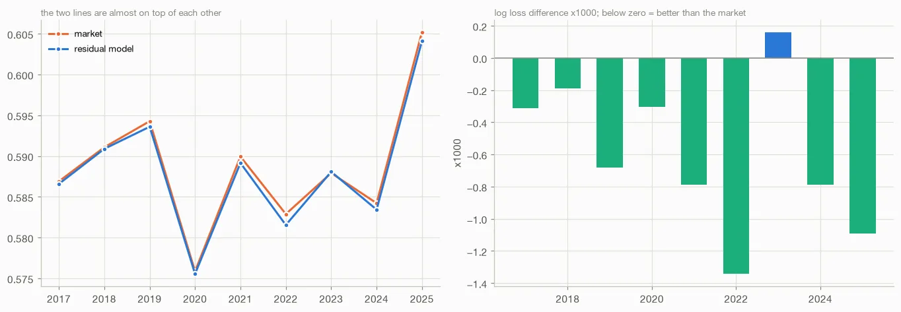

01 — Project · XGBoost, walk-forward validation
Beating the tennis betting market
Predicting the bookmaker's error instead of the match
Can a model built from public match data beat Pinnacle, the sharpest bookmaker, at predicting ATP matches? Head-on, no: six model families trained on 107 leak-free features all lost to the market, and their errors correlated at 0.99, pointing to an information ceiling.
Reframing the problem worked: the model predicts the market's error rather than the match, using the bookmaker's de-vigged log-odds as XGBoost's base_margin, and beats the market on log loss in 9 of 9 walk-forward seasons (~22,000 matches). Also included: leakage audits, a bit-for-bit reproduction check, documented negative results, and a live forward test that uncovered and fixed a train/serve skew.
- 9/9 walk-forward seasons beaten
- ~22,000 test matches, 2017–2025
- 6 model families that lost to the market
- 107 leak-free features

02 — Project · Coastal geomorphology, hydroclimatic data
Storm erosion analysis
A hydro-morphological analysis of erosion processes along the south-west French coastline
Storm-induced erosion processes are still a research topic. This analysis aims at understanding how a storm energy variable, based on wave height and storm duration, correlates with the volume of eroded beach.
Taking as input 5 years of hydroclimatic model data and 162 ground surveys at Truc Vert (France), it was designed as a basic model before a local early-warning system could be implemented.
- 162 beach surveys at Truc Vert
- 5 years of hydroclimatic model data
03 — Project · Deep learning, 1-D convolutional network
Genetic engineering CNN
Finding the lab of origin of plasmids with a convolutional neural network
Participation in a machine-learning challenge organised by drivendata.org on genetic engineering attribution. It follows A.A.K. Nielsen's approach of using a convolutional neural network to find the root laboratory of a plasmid of unknown origin.
DNA sequences are one-hot encoded over the four nucleotides and classified with a 1-D CNN. The challenge metric was top-10 accuracy.
- 500 bp sequence window
- 256 convolution filters
- 4 one-hot channels (A, T, G, C)
04 — Publications
Publications
-
2018
Towards the development of a storm erosion Early Warning System for the French Aquitanian coast
Proceedings from the International Coastal Symposium (ICS) 2018, Busan, Republic of Korea. Journal of Coastal Research.
-
2014
A comparative hydro-morphometric approach for modelling rainfall variability impact during hydrological extremes: application to 2002 and 2003 catastrophic events in the Lower Rhône valley, France
European Geosciences Union General Assembly, Vienna, Austria.